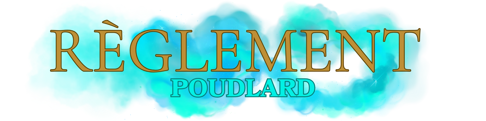

Accueil
Lore du Serveur
Rejoindre le Discord
Règles Générales Lexique RP Respect du Lore Régles Discord
Règles /me Règles Coma Règles Trames Groupes & Interactions
Règles Poudlard Règles Professeurs Règles Médicomages Magies, Sorts & Dons
Règlement Streamers
Règles Générales Lexique RP Respect du Lore Régles Discord
Règles /me Règles Coma Règles Trames Groupes & Interactions
Règles Poudlard Règles Professeurs Règles Médicomages Magies, Sorts & Dons
Règlement Streamers

1. Règles générales de conduite
- Le respect envers les professeurs, le personnel, les préfets et les autres élèves est obligatoire.
- Toute violence physique ou magique contre un élève ou un membre du personnel sera sanctionnée.
- Les élèves doivent porter l’uniforme scolaire réglementaire lors des cours et des repas dans la Grande Salle.
- Les propos ou actes discriminatoires envers le sang, l’origine ou les créatures magiques seront sanctionnés par les professeurs, directeurs ou sous-directeurs.
- Une tenue correcte est exigée en toute circonstance :
- - Exceptions : dans la salle commune ou durant les vacances scolaires si l’élève reste à l’internat.
- - En sortie scolaire, une tenue personnalisée est autorisée, mais elle doit toujours permettre de reconnaître la maison de l’élève.
- - Les chaussures à talons sont interdites.
- - La cape peut être retirée dans la cour extérieure, ou en classe si un professeur l’autorise.
2. Déplacements et lieux interdits
- Toute sortie après le couvre-feu est interdite, sauf autorisation spéciale.
- Les zones suivantes sont interdites aux élèves sauf encadrement ou autorisation :
- - La Forêt interdite (réservée aux professeurs, aux gardiens et aux cours encadrés).
- - Les cuisines (sauf permission expresse).
- - Les couloirs et salles condamnés ou marqués « Interdit ».
- - La Réserve de la Bibliothèque (nécessite un mot signé par un professeur).
- - Les salles de classe ou cachots non utilisés par le programme scolaire.
3. Utilisation de la magie
- L’usage de la magie est permis uniquement :
- Les sortilèges dangereux, même simples (ex. Incendio, Expelliarmus), ne doivent jamais être utilisés contre d’autres élèves sans encadrement.
- - En cours, sous la supervision d’un professeur.
- - Dans les salles communes, pour des exercices autorisés.
- - Lors d’activités encadrées (clubs, tournois, devoirs).
4. Objets magiques et interdictions
- Les objets dangereux sont interdits à l’intérieur de l’école.
- La liste officielle des objets interdits comprend plusieurs centaines d’articles (feux d’artifice, poudres à fumer, farces dangereuses, etc.).
- Les balais volants sont autorisés uniquement sur le terrain de Quidditch ou pendant les cours de Vol.
5. Vie dans l’école
- Les repas se prennent dans la Grande Salle.
- Les animaux de compagnie autorisés : hibou, chat, rat ou crapaud.
- Les élèves doivent garder le mot de passe de leur salle commune secret et ne jamais le divulguer à un élève d’une autre maison.
6. Discipline et sanctions
- Les professeurs peuvent retirer ou ajouter des points de maison.
- Les fautes graves entraînent des retenues, qui peuvent inclure :
- Les manquements très graves (utilisation de magie noire, agression, complot) entraînent une comparution devant le Directeur et peuvent mener à l’expulsion.
- - Nettoyage sans magie.
- - Tâches sous la supervision des surveillants.
7. Tournois et activités
- Le Quidditch est strictement réglementé : seuls les membres officiels des équipes ont accès au terrain hors cours.
- Les clubs et activités (ex. : Club de duel, Chorale, etc.) nécessitent l’approbation d’un professeur.
8. Cas particuliers
- Les élèves doivent obéir aux instructions du Directeur ou des Directeurs adjoints, qui peuvent modifier temporairement le règlement pour des raisons de sécurité.
- En cas de danger exceptionnel (attaque de créatures, menaces, instabilité magique), les directives du personnel priment sur le règlement.
- Le Transplanage est interdit dans l’enceinte de l’école. Seuls les elfes de maison le peuvent dû à l’enchantement de poudlard.
9. Scolarité et cursus
- De la 1ère à la 7ème année, les élèves suivent les cours obligatoires (Sortilèges, DCFM, Métamorphose, Histoire de la Magie, Potion, Soins aux Créatures Magiques, Botanique, Vol, Astronomie).
- À partir de la 3ème année, ils peuvent choisir des options supplémentaires qui compteront dans leurs notes globales aux B.U.S.E.
- À partir de la 6ème année, ils peuvent choisir des matières avancées disponibles selon leurs notes aux B.U.S.E.
- Les inscriptions aux matières avancées se font auprès des professeurs responsables.